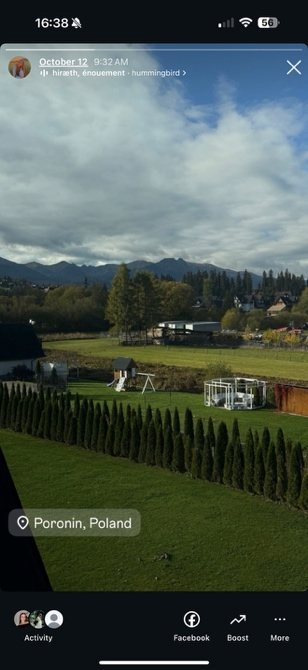
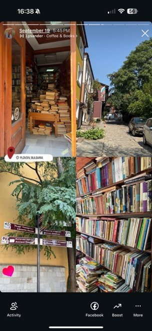

Your privacy · Lesson 10 of 12
Photos & location
Living out loud vs. keeping it safe
Post the vibe later, not your live location.

01 · Living out loud vs. keeping it safe
Share the vibe,not your location.
We’ve all been there: you’re sitting at this amazing little local spot, the vibe is immaculate, the food looks gorgeous, and you just have to snap a pic. Or you’re out on some gorgeous hiking trail, feeling on top of the world, and you want the whole internet to know you made it.
And honestly? That’s the fun of it!
02 · Why it’s awesome, and the catch
Fun to share,easy to follow.
Why it’s awesome
Sharing your favorite spots puts hidden gems on the map. It helps your friends find cool places, turns your feed into a scrapbook of your best days, and honestly, seeing someone else out enjoying life just makes people smile.
The catch
But here’s the thing: the internet is a big, wide room. When we broadcast our exact coordinates in real-time, we’re accidentally leaving a trail for anyone to follow.
03 · Street smarts
You don’t needto go off the grid.
But it helps to move through your feed with a little street smarts:
- 1Post later
Maybe post that dinner pic after you’ve already paid the bill and gone home.
- 2Sweep the background
Do a quick sweep of the background before hitting upload: are there street signs, house numbers, or work badges photobombing your shot?
- 3Keep your circle close
Check who’s actually on your friends list, because not everyone needs a VIP pass to your everyday life.
04 · Real photos
What do these storiesgive away?
Real stories posted by the team during the training. Look at the location tags and the backgrounds.





Watch
Tracked fromone picture.
05 · Checklist
Before youhit upload.
0 of 7 done
Content created by participants during the training course in Poronin, October 2026.
Game time
Two lies,one fact.
Social media & the illusion of privacy. Can you find the one true statement?
The truth is C. Internet sleuths constantly use background clues to find people. A and B are lies. A “Private” account does not stop approved followers from screenshotting or sharing your posts. Furthermore, even without a location tag, the visual background of a café acts as a live broadcast of your current physical location if you post it while you are still there.